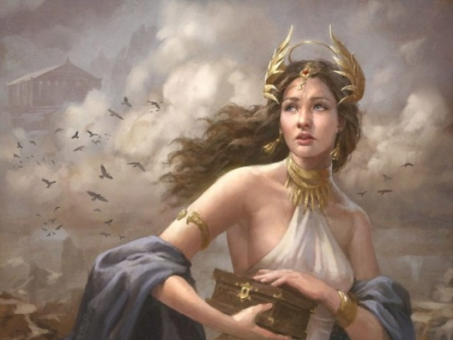
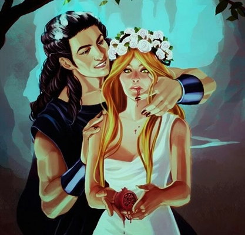
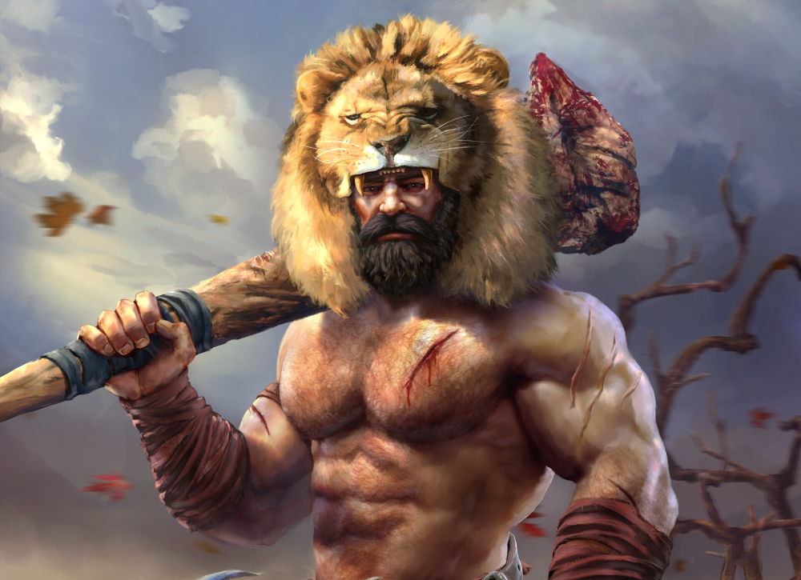
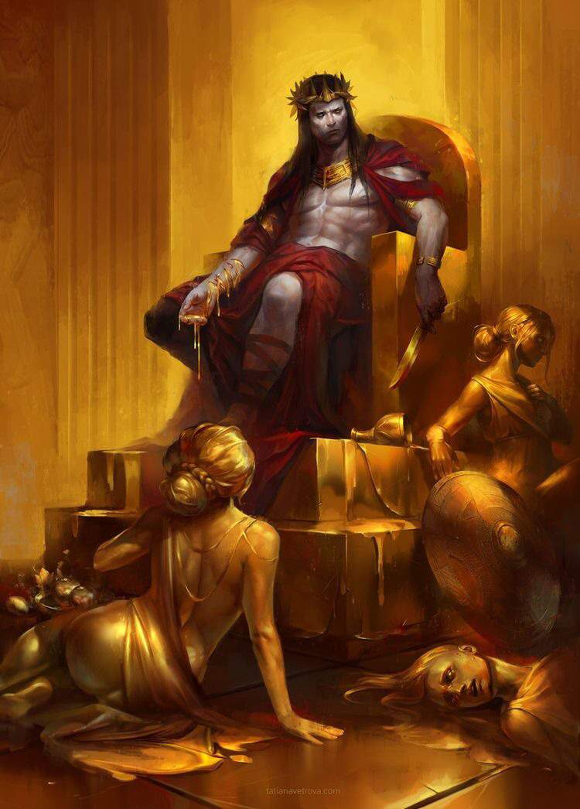

Contos da mitologia grega
|  |
A Caixa de PandoraA Caixa de Pandora é um objeto extraordinário que faz parte da mitologia grega.Trata-se de um caixa onde os deuses colocaram todas as desgraças do mundo, entre as quais a guerra, a discórdia, as doenças do corpo e da alma. Contudo, nela havia um único dom: a esperança. O mito da Caixa de Pandora explica a criação da mulher, suas qualidades e suas fraquezas, tal como todos os males existentes no mundo. Desde sua origem, o mito tem um caráter social. Neste caso, a Caixa de Pandora passou a representar a maldade que pode vir dela, a desobediência e a curiosidade que prejudica o ser humano. |
|  |
O rapto de PerséfoneNarra o mito que Perséfone estava num jardim, a colher narcisos quando, subitamente, submergiu do solo o deus do reino dos mortos, o poderoso Hades, que usando de força e violência, a rapta e a conduz aos seus domínios, embaixo da terra.Quando se deu conta do desaparecimento de sua filha, Deméter, a deusa do cereal e de tudo o que floresce e alimenta homens e animais aqui, na terra, ficou transtornada. Foi aí que a deusa da agricultura, da semeadura e da colheita, teve a ideia de fazer cessar o crescimento de todos, absolutamente todos os grãos. |

|
A origem da MedusaConta o mito que Medusa foi uma sacerdotisa do templo de Atena.No entanto, Medusa é assediada sexualmente por Poseidon, o deus dos mares, cedendo aos seus encantos ao deitar com ele no templo da deusa Atena. Diante disso, Atena transforma seu cabelo em serpentes e seu rosto num horrível semblante capaz de transformar em pedra todos que encontram seus olhos. |
|  |
Os trabalhos de HérculesHércules é um herói presente na mitologia grega que ganhou notoriedade por possuir uma grande força. Ele realizou uma série de trabalhos considerados impossíveis, com destaque para as 12 missões que ele recebeu de um rei chamado Euristeu.Hércules era filho de Zeus com uma mortal chamada Alcmena e foi perseguido ao longo de sua vida por Hera, esposa de seu pai. Hera levou Hércules à loucura em duas ocasiões, atrasou o seu parto e o tentou assassiná-lo quando ainda era um bebê. Depois da morte do herói, Zeus o imortalizou e permitiu que ele vivesse no Olimpo. |
|
O labirinto de MinotauroO Minotauro é uma criatura mencionada na mitologia grega, sendo descrito como um ser monstruoso que possui o corpo de ser humano, mas sua cabeça e rabo são como de um touro. O Minotauro era temido nos mitos porque era uma criatura feroz que se alimentava de seres humanos, por isso era mantido aprisionado em um labirinto. |
|
|  |
A maldição de MidasO rei Midas é um personagem encontrado na mitologia grega, sendo reconhecido como rei da Frígia e um homem de muitas posses.Midas ajudou um seguidor de Dioniso, e por isso recebeu a possibilidade de ter um desejo cumprido. Ele pediu o poder de transformar tudo em ouro, e logo percebeu que seu pedido era uma maldição que o levaria a morrer de fome. |